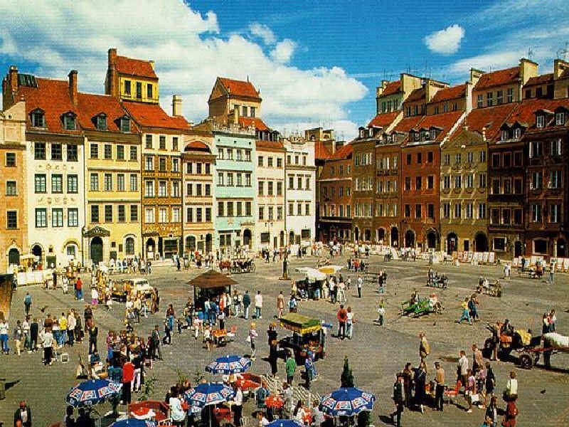
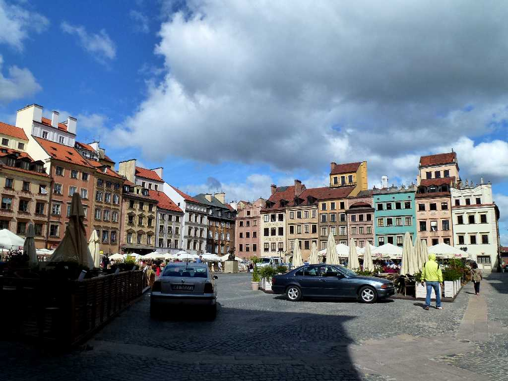
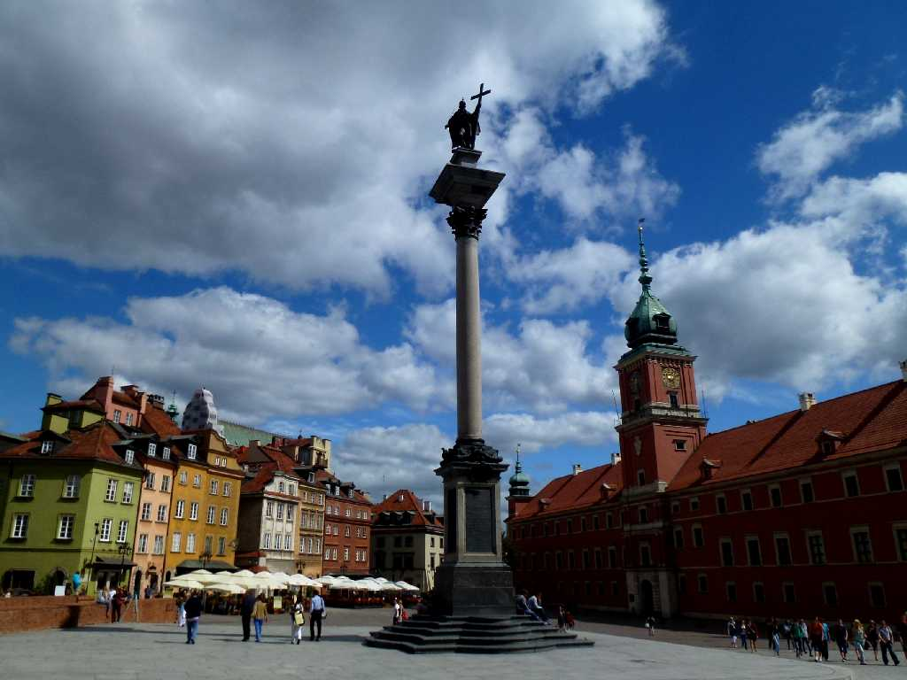
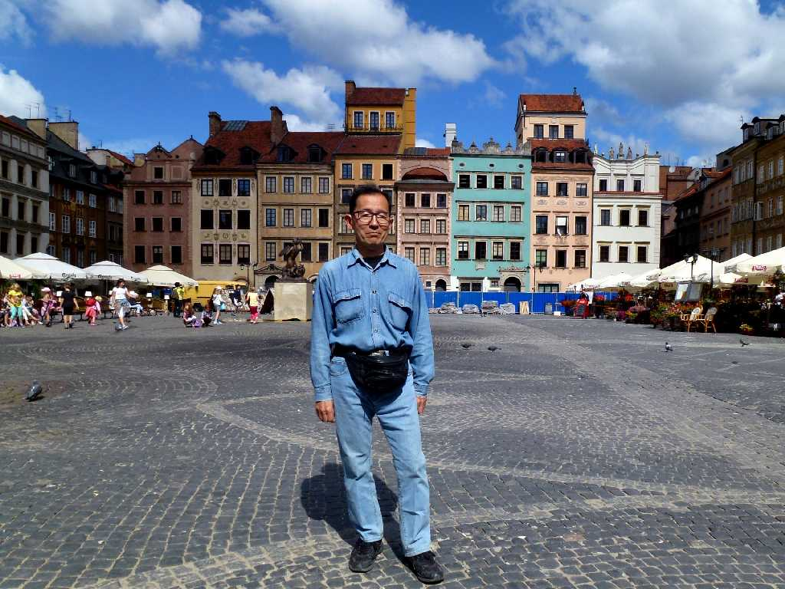
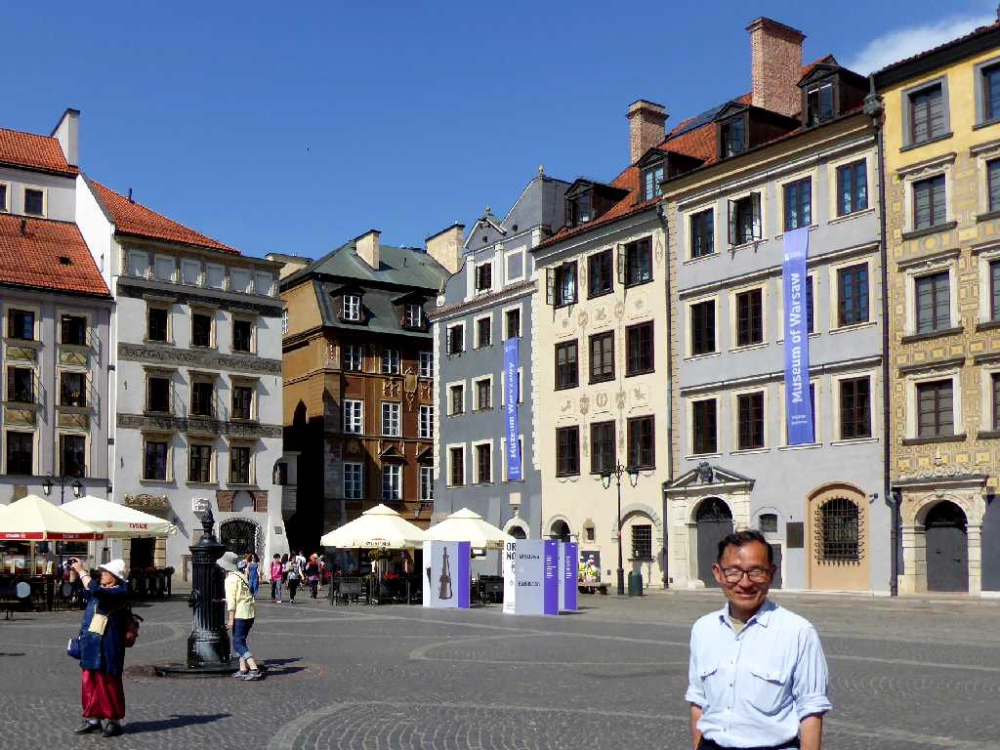

August 1989 Market Square Old Town Warsaw
第二次世界大戦前の旧市街は北のパリと云われヨーロッパ最大のユダヤ人都市であったがナチに徹底的に破壊されたものの１９８０年には復興した １９８９年夏初めてヨーロッパの共産圏東欧に入国したが国民生活はのんびりとしてゆったりと時間がながれている様子だった

Market Square Old Town Warsaw
８０日間世界一周鉄道の旅３０日目で２４年ぶりのワルシャワ再訪問で共産圏から民主主義圏に入り自由競争時代となり活気のある街になっていた

Castle Square Old Town

July 23 2013 Market Square Old Town
Market Square Old Town Warsaw
ポーランド周遊３,５００㎞バスの旅で６年ぷりのワルシャワ再訪問で競争発展を望む自由主義政策派とゆったりとした生活を望む社会主義政策派とが二分するデモと街頭宣伝が観られる街となっていた

Castle Square Old Town
今年は日本ポーランド国交樹立１００周年に当たる

June 6 2019 Market Square Old Town